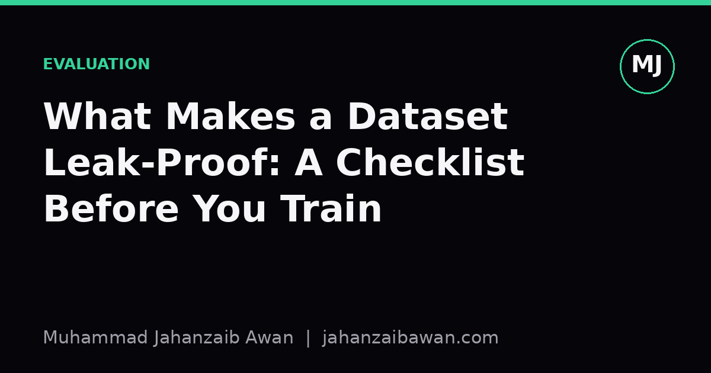

What Makes a Dataset Leak-Proof: A Checklist Before You Train
A high test score means nothing if information from the future, or from the test set itself, quietly slipped into training. Here is how to check before you trust a single metric.

Why leakage is the quiet killer of good results
Most models do not fail loudly. They fail by reporting a test accuracy of ninety-six percent, getting deployed with a round of applause, and then underperforming a simple baseline within a month of going live. By the time anyone notices, the paper trail of decisions that led there is long gone. In my experience the single most common cause of this gap between offline and real-world performance is leakage: information from outside the legitimate training set, or from the future relative to a prediction point, sneaking into the features or the split.
Leakage is seductive because it does not look like a bug. The code runs, the loss decreases, the validation curve looks healthy. Nothing crashes. The only symptom is that the number is too good, and 'too good' is a judgement call that requires you to already know what realistic performance should look like for the problem. That is precisely why a checklist matters more than intuition here: intuition tells you the model is working, the checklist tells you whether it is allowed to be.
I think of leakage as any channel through which the model gets to see, directly or indirectly, something it would not have access to at prediction time in production. That definition is broader than the textbook case of 'the target variable is accidentally in the features'. It includes temporal leakage, group leakage, preprocessing leakage, and duplicate leakage, and each has its own tell-tale signs worth checking before you train anything serious.
The split: is it actually independent of the task?
Start with the most basic question: does a random row-level split respect the structure of the problem, or does it quietly let the model cheat? Consider a dataset of patient visits used to predict a diagnosis, where a single patient contributes several visits over a year. A plain random split will scatter that patient's visits across both training and test sets. The model does not need to learn the underlying medical pattern; it can partly learn to recognise the patient's own baseline values, which appear in both splits. Reported accuracy might sit around ninety-two percent, while a proper split by patient, ensuring every visit from one person lands entirely in train or entirely in test, might reveal the true figure closer to seventy-eight percent. The fourteen-point gap is not noise, it is the model memorising identity rather than learning signal.
The fix is to split along the unit that defines 'a new, unseen case' in deployment. If the model will one day see a brand new patient it has never encountered, split by patient. If it will see a new day of trading it has never seen before, split by time. If it will see a new document from a source it has not seen, split by source or author. The question to ask every time is: in production, what is genuinely novel about the next example the model will face? Whatever that is, it must be the axis of your split, not row identity.
Time deserves special mention because it is the leak that evergreen advice keeps having to repeat. If you are predicting anything that unfolds over time, a random split allows the model to be trained on data from after the point it is meant to be predicting from. A model forecasting next month's demand that was trained on a mix of past and future months will look excellent in cross-validation and then flounder the moment it meets a true future it has never brushed against. The checklist item here is simple to state and easy to skip under deadline pressure: sort by time, split by time, and never let a single future timestamp bleed backwards into training.
Preprocessing, duplicates, and features: the quieter leaks
Even with a correct split, leakage can creep in through preprocessing done before the split is respected. A classic example is scaling or imputing missing values using statistics computed on the entire dataset, test rows included, before any model sees them. If you fill missing ages with the overall mean, that mean was computed partly from test rows, so the test set has influenced its own imputation. The leak is subtle, often worth only a fraction of a percentage point, but it accumulates across every feature treated this way, and it means your validation score is validating a slightly different, slightly easier pipeline than the one you would actually deploy. The discipline is to fit every transformer, scaler, encoder, and imputer only on the training fold, then apply it unchanged to validation and test.
Duplicates are the leak nobody expects until they go looking. It is common in scraped text, image, or tabular datasets for near-identical or exactly identical records to exist, sometimes because of how the data was collected, sometimes because of upstream joins. If even a small fraction of test examples are duplicates, or close paraphrases, of training examples, the model is being tested on material it has effectively memorised. A quick deduplication pass, checking exact matches and near matches via hashing or similarity scoring, before splitting, is cheap insurance against an inflated score that nobody can later explain.
Finally, scrutinise every feature's provenance and ask when, exactly, it became known. Features derived from aggregates, like a customer's average spend over their full history, can secretly encode information from after the prediction date if the aggregate was computed using the whole dataset rather than only data available up to that point. Similarly, watch for proxy variables that are themselves downstream consequences of the label, such as including a 'cancellation processed' flag when predicting cancellation. These do not look like leakage because they are not the literal target column, but they let the model solve the task by reasoning backwards from an effect rather than forwards from genuine causes.
A practical checklist before you train anything
Before trusting any score, walk through five questions in order. First, what is the unit of novelty in deployment, and does your split respect it, whether that is patient, user, document, session, or time? Second, are all transformations, scalers, encoders, and imputers fit only on the training fold? Third, have you checked for exact and near duplicates across the split boundary? Fourth, for every feature, can you state the exact moment it became knowable, and is that moment before the prediction point in every single row? Fifth, does the test score feel implausibly strong relative to domain knowledge or a simple baseline, and if so, have you actively tried to find the leak rather than assumed the model is simply good?
None of this is exotic. It is slower than running a notebook end to end and trusting the first number that appears, and that slowness is the point. A model validated this carefully will usually report a lower, less exciting score than one validated carelessly. That lower number is the one worth publishing, deploying, and standing behind, because it is the only one that tells you something true about how the model will behave on data it has genuinely never seen.